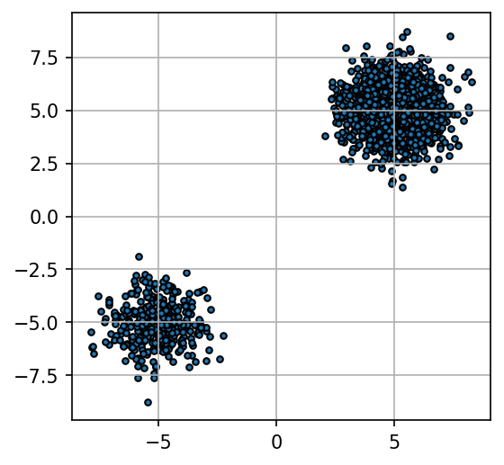
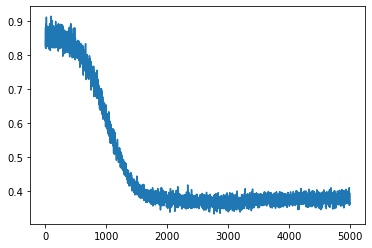
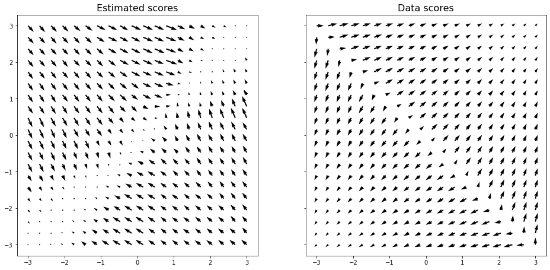
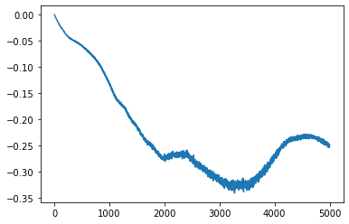
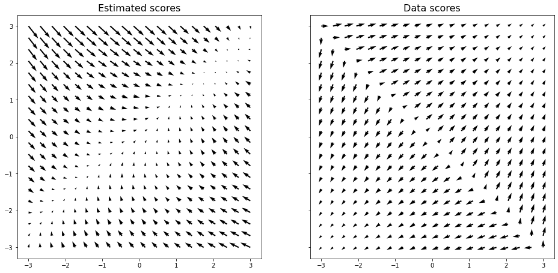
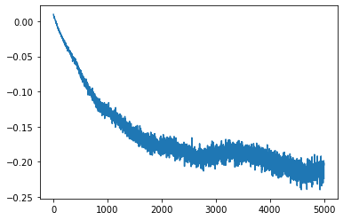
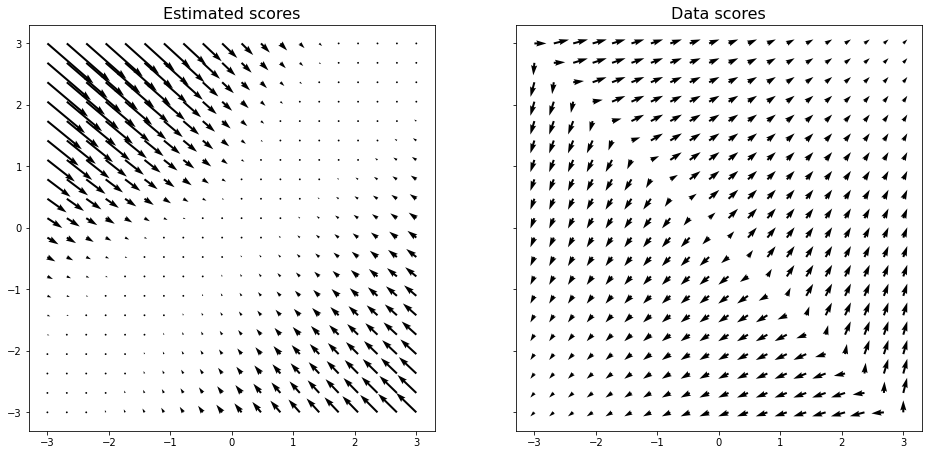
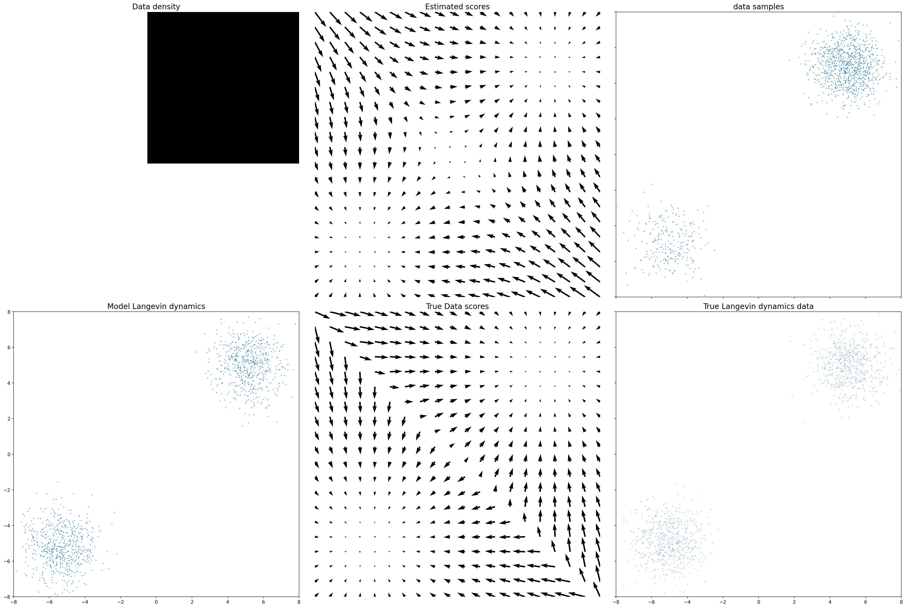

import torch
from torch.distributions import MultivariateNormal, Normal
import numpy as np
import tqdm
from IPython.display import Image
import matplotlib.pyplot as plt
%matplotlib inlineScore Estimations, Langevin Generative models and NCSN
By Addisu Amare
\(\textbf{Date}:\) 08.11.24
Teachers - Ground-Truth data
The \(\textbf{Teacher}\) is the class of the density distribution, which we want to approximate by neural-network-based approaches. This class has the following methods:
- sample(sampling from the density distribution)
- log_prob(calculation of the logarithm of the distribution)
Undoubtedly, in order to calculate the ground-truth logarithm of the distribution we define the distribution by such way to analytically compute the gradient of the logartihm. Thus, one can take the Teacher, which is the ground-truth distribution thrrough the notebook, as follows:
\[\mathbb{P} = \frac{1}{5}\mathcal{N}((-5,-5),I) + \frac{4}{5}\mathcal{N}((5,5),I)\]
class GMMDist(object):
def __init__(self, dim):
self.mix_probs = torch.tensor([0.8, 0.2])
self.means = torch.stack([5 * torch.ones(dim), -torch.ones(dim) * 5], dim=0)
self.sigma = 1
self.std = torch.stack([torch.ones(dim) * self.sigma for i in range(len(self.mix_probs))], dim=0)
def sample(self, n):
"""
n - int
"""
n = torch.Size([n])[0]
mix_idx = torch.multinomial(self.mix_probs, n, replacement=True)
means = self.means[mix_idx]
stds = self.std[mix_idx]
return torch.randn_like(means) * stds + means
def log_prob(self, samples):
"""
samples - torch.Size([B,N])
"""
logps = []
for i in range(len(self.mix_probs)):
logps.append((-((samples - self.means[i]) ** 2).sum(dim=-1) / (2 * self.sigma ** 2) - 0.5 * np.log(
2 * np.pi * self.sigma ** 2)) + self.mix_probs[i].log())
logp = torch.logsumexp(torch.stack(logps, dim=0), dim=0)
return logpdef plot_teachers(teacher, num_samples):
"""
num_samples - int
"""
plt.figure(figsize=(4,4),dpi=150 )
samples = teacher.sample(num_samples)
plt.scatter(samples[:,0],samples[:,1],s=10,edgecolor='black')
plt.grid()DIM = 2
NUM_SAMPLES_PLOT = 2000
teacher = GMMDist(DIM)
plot_teachers(teacher, NUM_SAMPLES_PLOT)
def data_score(x):
x = x.detach()
x.requires_grad_(True)
y = teacher.log_prob(x).sum()
return torch.autograd.grad(y, x)[0]def toy_net(hiddens):
model = []
for inp,outp in zip(hiddens[:-1],hiddens[1:]):
model.append(torch.nn.Linear(inp,outp,bias=True))
model.append(torch.nn.ReLU())
model.pop()
return torch.nn.Sequential(*model)1. Score-based genereative modeling
def plot_loss_quiever(model,teacher, label = None):
grid_size = 20
left_bound=-3
right_bound=3
mesh = []
x = np.linspace(left_bound, right_bound, grid_size)
y = np.linspace(left_bound, right_bound, grid_size)
for i in x:
for j in y:
mesh.append(np.asarray([i, j]))
mesh = np.stack(mesh, axis=0)
mesh = torch.from_numpy(mesh).float()
if label == "energy":
mesh.requires_grad = True
scores = model(mesh)
scores = torch.autograd.grad(scores.sum(),mesh,create_graph=True)[0]
else:
scores = model(mesh.detach())
mesh = mesh.detach().numpy()
scores = scores.detach().numpy()
fig,ax = plt.subplots(1,2,figsize=(16,8),sharex=True,sharey=True)
ax[0].grid(False)
ax[0].quiver(mesh[:, 0], mesh[:, 1], scores[:, 0], scores[:, 1], width=0.005)
ax[0].set_title('Estimated scores', fontsize=16)
ax[0].axis('square')
scores = data_score(torch.from_numpy(mesh))
scores = scores.detach().numpy()
ax[1].grid(False)
ax[1].quiver(mesh[:, 0], mesh[:, 1], scores[:, 0], scores[:, 1], width=0.005)
ax[1].set_title('Data scores', fontsize=16)
ax[1].axis('square')1.1 Fischer divergence
\(\textbf{Notation}:\)
- \(x \in \mathbb{R}^{D}, \quad x \sim \mathbb{P}(\cdot)\)
- The model for approximation of \(\mathbb{P}\) is \(\mathbb{\hat{P}}(x, \theta) = \frac{1}{Z(\theta)}\mathbb{Q}(x,\theta)\), unnormalized density
- Desires: One would like to find out such parameters to apprroximate the ground-truth distribution better.
- \(\mathbb{\hat{P}}(x, \theta)\) is reffered to as Energy-based models.
Considering the gradient of the approximation:
\[ \nabla_{x} \log \mathbb{\hat{P}}(x,\theta) = \nabla_{x} \log \mathbb{Q}(x,\theta) - \nabla_{x} \log Z(\theta) = \nabla_{x} \log \mathbb{Q}(x,\theta) - 0 \]
We see, that in order to estimate the gradient of logarithm of approximate distribution, we need in the gradient of unnormalized density \(\mathbb{Q}(\cdot, \theta)\). Such gradient of unnormalized density is called \(\textbf{Score function}\) and is denoted as \(\psi(x,\theta)\).
\(\textbf{The main goal of notebook}:\)
We would like to estimate the gradient of logarithm of the ground-truth density \(\mathbb{P}\) by the score function.
Undoubtedly, when we have the access to the ground-truth grradient of logarithm of density, we can consider easy regression problem between \(\mathbb{Q}\) and \(\mathbb{P}\). This easy regression prroblem is reffered to as \(\textbf{Fischer divergence}\).
Let \(p(x)\) and \(q(x)\) are ground-truth distribution of data and unnormalized approximate distribution. The both functions are scalar functios. \[ F(q||p)=\frac{1}{2}\int || - \nabla_{x}\log q(x) + \nabla_{x} \log p(x) ||_{2}^{2}dp(x) \]

\(\textbf{Code}\) for the Fischer divergence.
def fischer_divergence(energy_net, data, teacher):
"""
energy_net - torch.nn.Module
teacher - object
data. - torch.Size([B,N])
"""
data.requires_grad = True
logq = -energy_net(data) # torch.Size([B,1])
logp = teacher.log_prob(data)# torch.Size([B,1])
q_score = torch.autograd.grad(logq.sum(), data,
create_graph=True,retain_graph=True)[0]
p_score = torch.autograd.grad(logp.sum(), data,
create_graph=True,retain_graph=True)[0]
return 0.5*torch.mean(torch.norm((q_score + p_score)**2,dim=-1))HIDDENS = [DIM,64,128,256,128,64,1]
model = toy_net(HIDDENS)
opt = torch.optim.Adam(model.parameters(),lr=1e-5)
batch_size=2048
iterations=5000
losses = []
for _ in tqdm.tqdm(range(iterations)):
opt.zero_grad()
samples = teacher.sample(batch_size)
loss = fischer_divergence(model,samples,teacher)
loss.backward()
opt.step()
losses.append(loss.item())100%|██████████| 5000/5000 [03:37<00:00, 22.95it/s]plt.plot(losses);
plot_loss_quiever(model, teacher, label='energy')
1.2 Score Matching and Estimation.
\(\textbf{Importantly}:\)
When we talk \(\textbf{Score Estimation}\), it means, that we solve the regression problem between \(\psi(x,\theta)\), where \(\psi(x,\theta)\) is a neural network. When we talk \(\textbf{Score Matching}\), it means, that we solve the regression problem between \(\psi(x,\theta)\), where \(\psi(x,\theta)\) is \(\nabla_{x} \log q(x,\theta)\) and \(q(x,\theta)\) is a neural-network.

\(\textbf{Theorem 1}:\) Let \(\psi(x,\theta): \mathbb{R}^{D} \to \mathbb{R}^{D}\) is a regular differetiable function. Having defined the score function as follows :
\[\psi_{i}(x,\theta) = \frac{\partial \log q(x,\theta)}{\partial x_{i}}, \quad \frac{\partial \psi(x,\theta)}{\partial x_{i}} = \frac{\partial^{2} \log q(x,\theta)}{\partial x_{i}^{2}} \]
Then:
\[\mathcal{J}(\theta) = \int_{\mathbb{R}^{D}} \sum_{i=1}^{D} \{ \frac{\partial \psi(x,\theta)}{\partial x_{i}}+ \frac{1}{2}\psi(x,\theta)^{2}\}d\mathbb{P}(x) + Const.\]
\(\textbf{proof}:\) See the Seminar
def score_matching(energy_net, data):
"""
energy_net - torch.nn.Module
data - torch.Size([B,N])
"""
data.requires_grad = True
logq = -energy_net(data) # torch.Size([B,1])
score = torch.autograd.grad(logq.sum(), data,
create_graph=True, retain_graph=True)[0]# torch.Size([B,N])
loss1 = 0.5*torch.norm(score,dim=-1)**2 # torch.Size([B])
grad_score = torch.autograd.grad(score.sum(dim=-1).sum() , data,
create_graph=True, retain_graph=True)[0] #torch.Size([B,N])
loss2 = grad_score.sum(dim=-1)#torch.Size([B])
return torch.mean(loss1 + loss2 ,dim = 0)def score_estimation(score_net, data):
"""
energy_net - torch.nn.Module
data - torch.Size([B,N])
"""
data.requires_grad = True
score = score_net(data)#torch.Size([B,N])
loss1 = 0.5*torch.norm(score,dim=-1)**2 # torch.Size([B])
grad_score = torch.autograd.grad(score.sum(),data,
create_graph=True,retain_graph=True)[0]
loss2 = grad_score.sum(dim=-1)# torch.Size([B])
return torch.mean(loss1 + loss2 ,dim = 0)HIDDENS = [DIM,64,128,256,128,64,2]
model = toy_net(HIDDENS)
opt = torch.optim.Adam(model.parameters(),lr=1e-5)
batch_size=2048
iterations=5000
losses = []
for _ in tqdm.tqdm(range(iterations)):
opt.zero_grad()
samples = teacher.sample(batch_size)
loss = score_estimation(model,samples)
loss.backward()
opt.step()
losses.append(loss.item())100%|██████████| 5000/5000 [03:28<00:00, 24.04it/s]plt.plot(losses);
plot_loss_quiever(model,teacher)
1.3 Denoising Score matching and estimation
Let’s consider \(\mathbb{P}_{\sigma}\) is as a perturbed data distribution of \(\mathbb{P}_{\sigma}\). First of all, we pick out the noise scale \(\sigma\) manually.
- \(\mathbb{q}_{\sigma}(\tilde{x}|x) = \mathcal{N}(\tilde{x}|x,\sigma^{2}I)\) - conditional perturbed distribution.
- \(\mathbb{P}_{\sigma}(\tilde{x},x) =\mathbb{q}_{\sigma}(\tilde{x}|x)\mathbb{P}(x)\) - joint distribution.
- \(\mathbb{P}_{\sigma}^{m}(\tilde{x}) = \int \mathbb{P}_{\sigma}(\tilde{x},x) dx\) - marginal distribution.
\(\textbf{Theorem 2:}\) Let \(\mathbb{P}(x)\) is the gound-truth distribution, while \(\psi(x,\theta): \mathbb{R}^{D} \to \mathbb{R}^{D}\) is learnable scorre function and tries to approximate the gradient of logarothm of \(\mathbb{P}\). Then: \[\mathbb{E}_{\mathbb{P}(x)} \{ \frac{1}{2}||\psi(x,\theta) - \frac{\partial}{\partial x} \log \mathbb{P}(x) ||_{2}^{2}\} \sim \mathbb{E}_{\mathbb{P}_{\sigma}(x,\tilde{x})}\{\frac{1}{2}||\psi(\tilde{x},\theta) - \frac{\partial}{\partial \tilde{x}} \log \mathbb{P}_{\sigma}(\tilde{x}|x) ||_{2}^{2}\}\]
\(\textbf{Proof}:\) On seminar
def denoising_score_matching( score_net, samples, sigma):
"""
score_net - torch.nn.module
samples - torch.Size([B,N])
sigma - int
"""
samples.requires_grad = True
vector = torch.randn_like(samples, device = samples.device)*sigma
perturbed_samples = samples + vector
logp = - score_net(perturbed_samples)
dlogp = sigma**2*torch.autograd.grad(logp.sum(), perturbed_samples,
create_graph=True, retain_graph=True)[0]
kernel = vector
return 0.5*torch.mean(torch.norm(dlogp + kernel, dim=-1)**2)def denoising_score_estimation( score_net, samples, sigma):
"""
score_net - torch.nn.module
samples - torch.Size([B,N])
sigma - int
"""
perturbed_samples = samples + torch.randn_like(samples, device = samples.device)*sigma
score = score_net(perturbed_samples)
dlogq = 1/sigma**2*(samples - perturbed_samples )
return 0.5*torch.mean(torch.norm((score - dlogq)**2,dim=-1))model = toy_net(HIDDENS)
opt = torch.optim.Adam(model.parameters(),lr=1e-5)
batch_size=2048
iterations=5000
losses = []
for _ in tqdm.tqdm(range(iterations)):
opt.zero_grad()
samples = teacher.sample(batch_size)
loss = denoising_score_estimation(model,samples,0.01)
loss.backward()
opt.step()
losses.append(loss.item())100%|██████████| 5000/5000 [00:30<00:00, 166.51it/s]plot_loss_quiever(model,teacher)
1.4 Sliced Score matching and estimation
To understand Sliced Score Estimation, we recall \(S_{d}(x)\) and \(\psi(x,\theta)\), where the firrst is the ground-truth score function. If we solve any regression problem between \(S_{d}(x)\) and \(\psi(x,\theta)\), then we have the problem between two high-dimensional vectors. One would like to reduce the dimensionality of the problem. The random projection is one of the possible solutions.
\[ F(\mathbb{Q},\mathbb{P}) = \frac{1}{2}\int_{\mathbb{R}^{D}}||\psi(x,\theta) - S_{d}(x) ||_{2}^{2} \]
Then, we rewrite the aforementioned expression via projections on random Gaussian vectors:
\[ \mathcal{L}(\theta) = \frac{1}{2}\mathbb{E}_{p_{v}}\mathbb{E}_{\mathbb{P}(x)}||v^{T}\psi(x,\theta) - v^{T}S_{d}(x)||_{2}^{2},\]
where \(p_{v}(v) = \mathcal{N}(v|0,I)\), and we imply, that \(\mathbb{E}_{p_{v}}||v||^{2}_{2} < \infty\)
\(\textbf{Theorem 3}\): Let \(\psi(x,\theta)\) is a score function, \(S_{d}(x)\) is the ground-truth scorree function, then:
\[\frac{1}{2}\mathbb{E}_{p_{v}}\mathbb{E}_{p_{d}}||v^{T}\psi(x,\theta) - v^{T}S_{d}(x)||_{2}^{2} = \frac{1}{2}\mathbb{E}_{p_{v}}\mathbb{E}_{p_{d}}(v^{T}\psi(x,\theta))^{2} + \sum_{i=1}^{D}\mathbb{E}_{p_{d}} v_{i}v^{T} \times \frac{\partial \psi(x,\theta)}{\partial x_{i}}\]
\(\textbf{Proof}:\) On seminar
def sliced_score_estimation(score_net, samples, n_particles=1 ):
"""
"""
samples = samples.unsqueeze(0).expand(n_particles,*samples.shape).contiguous().view(-1,*samples.shape[1:])
samples.requires_grad = True
vectors = torch.randn_like(samples)
vectors = vectors / torch.norm(vectors, dim=-1, keepdim=True)
score = score_net(samples)
loss1 = 0.5*torch.sum(score*vectors, dim=-1)**2 #torch.Size([M*B])
loss1 = loss1.view(n_particles, -1).mean(dim=0)
return loss1.mean()def sliced_score_estimation_vr(score_net, samples, n_particles=1):
"""
Be careful if the shape of samples is not B x x_dim!!!!
"""
dup_samples = samples.unsqueeze(0).expand(n_particles, *samples.shape).contiguous().view(-1, *samples.shape[1:])
dup_samples.requires_grad_(True)
vectors = torch.randn_like(dup_samples)
grad1 = score_net(dup_samples)
gradv = torch.sum(grad1 * vectors)
grad2 = torch.autograd.grad(gradv, dup_samples, create_graph=True)[0]
grad1 = grad1.view(dup_samples.shape[0], -1)
loss1 = torch.sum(grad1 * grad1, dim=-1) / 2.
loss2 = torch.sum((vectors * grad2).view(dup_samples.shape[0], -1), dim=-1)
loss1 = loss1.view(n_particles, -1).mean(dim=0)
loss2 = loss2.view(n_particles, -1).mean(dim=0)
loss = loss1 + loss2
return loss.mean(), loss1.mean(), loss2.mean()def sliced_score_estimation_own(score_net, samples, n_particles=1):
samples.requires_grad = True
vectors = torch.randn(n_particles, *samples.shape)
vectors = vectors / torch.norm(vectors, dim=-1, keepdim=True)
score = score_net(samples)
loss1 = 0.5*torch.matmul(score.unsqueeze(0),vectors.permute(0,2,1))#torch.Size([M,B,B])
loss1 = torch.sum(loss1,dim=-1)**2 # torch.Size([M,B])
loss1 = torch.mean(loss1,dim=-1).mean(dim=0)
# run the code
#loss2 =
return loss1 + loss2model = toy_net(HIDDENS)
opt = torch.optim.Adam(model.parameters(),lr=1e-5)
batch_size=2048
iterations=5000
losses = []
for _ in tqdm.tqdm(range(iterations)):
opt.zero_grad()
samples = teacher.sample(batch_size)
loss,*_ = sliced_score_estimation_vr(model,samples)
loss.backward()
opt.step()
losses.append(loss.item())100%|██████████| 5000/5000 [03:35<00:00, 23.23it/s]plt.plot(losses);
plot_loss_quiever(model,teacher)
Problem of score estimation

2. Noise Conditional Score Network (NCSN) on toy Examples
Once we have trained a score-based model \(S_{\theta}(x) = \nabla_{x} \log \mathbb{P}(x)\) we can use an iterative procedure called Langevin dynamics to draw samples from it.
Langevin dynamics provides an MCMC procedure to sample from a distribution \(\mathbb{P}(x)\) using only its score function the score function. Specifically, it initializes the chain from an arbitrary prior distribution \(x_{0} \sim \pi(x)\) and then iterates the following
\[x_{k+1} = x_{k} + \epsilon \nabla_{x} \log \mathbb{P}(x) + \sqrt{2\epsilon}z, \quad z \sim \mathcal{N}(z|0,I)\]
When \(\epsilon \to 0\) as well as \(K \to \infty\) , \(x_{k}\) obtained from the procedure in Langevin Dynamics algorithm converges to a sample from \(\mathbb{P}(x)\) under some regularity conditions. In practice, the error is negligible when \(\epsilon\) is sufficiently small and \(K\) is sufficiently large.

Next, we estimate the score function of each noise-perturbed distribution \(\nabla \log \mathbb{P}{\sigma_{i}}(x)\), by training a Noise Conditional Score-Based Model \(S(x_{i},\sigma_{i})\),with score matching, such that:
\[S(x_{i},\sigma_{i}) = \nabla_{x} \log \mathbb{P}_{\sigma}(x_{i})\]

The training objective for \(S_{\theta}(x_{i},\sigma_{i})\) is a weighted sum of Fisher divergences for all noise scales. In particular, we use the objective below.
\[ \sum_{i=1}^{L} \lambda(i) \mathbb{E}_{\mathbb{P}_{\sigma_{i}}}||s_{\theta}(x,\sigma_{i}) - \nabla_{x} \log \mathbb{P}_{\sigma_{i}}(x)||_{2}^{2}\]
After training our noise-conditional score-based model \(S_{\theta}(x,\sigma_{i})\), we can produce samples from it by running Langevin dynamics for \(i = L,L-1,...,1\) in sequence. This method is called annealed Langevin dynamics since the noise scale \(\sigma_{i}\) decreases (anneals) gradually over time.

def visualize(teacher, model, left_bound=-1., right_bound=1., savefig=None, step=None, device=None):
#---------------------------------------------------#
fig,ax = plt.subplots(2,3, figsize=(27,18),sharex=True, sharey=True,dpi=150 )
mesh = []
grid_size = 100
x = np.linspace(left_bound, right_bound, grid_size)
y = np.linspace(left_bound, right_bound, grid_size)
for i in x:
for j in y:
mesh.append(np.asarray([i, j]))
mesh = np.stack(mesh, axis=0)
mesh = torch.from_numpy(mesh).float()
if device is not None:
mesh = mesh.to(device)
logp_true = teacher.log_prob(mesh)
logp_true = logp_true.view(grid_size, grid_size).exp()
ax[0,0].grid(False)
ax[0,0].axis('off')
ax[0,0].set_title('Data density', fontsize=16)
ax[0,0].imshow(np.flipud(logp_true.cpu().numpy()), cmap='inferno')
#---------------------------------------------------------#
grid_size = 20
mesh = []
x = np.linspace(left_bound, right_bound, grid_size)
y = np.linspace(left_bound, right_bound, grid_size)
for i in x:
for j in y:
mesh.append(np.asarray([i, j]))
mesh = np.stack(mesh, axis=0)
mesh = torch.from_numpy(mesh).float()
if device is not None:
mesh = mesh.to(device)
scores = model( mesh.detach().to(DEVICE) )
mesh = mesh.detach().cpu().numpy()
scores = scores.detach().cpu().numpy()
ax[0,1].grid(False)
ax[0,1].axis('off')
ax[0,1].axis('square')
ax[0,1].quiver(mesh[:, 0], mesh[:, 1], scores[:, 0], scores[:, 1], width=0.005)
ax[0,1].set_title('Estimated scores', fontsize=16)
#-------------------------------------------------------------#
samples = teacher.sample(1280)
samples = samples.detach().cpu().numpy()
ax[0,2].scatter(samples[:, 0], samples[:, 1], s=0.5)
ax[0,2].axis('square')
ax[0,2].set_title('data samples',fontsize=16)
ax[0,2].set_xlim([left_bound, right_bound])
ax[0,2].set_ylim([left_bound, right_bound])
#------------------------------------------------------------#
samples_ = torch.rand(1280, 2) * (right_bound - left_bound) + left_bound
samples = ncsn.langevin_dynamics(model, samples_).detach().numpy()
ax[1,0].scatter(samples[:, 0], samples[:, 1], s=0.5)
ax[1,0].axis('square')
ax[1,0].axis('square')
ax[1,0].set_title('Model Langevin dynamics',fontsize=16)
ax[1,0].set_xlim([left_bound, right_bound])
ax[1,0].set_ylim([left_bound, right_bound])
#-----------------------------------------------------------#
scores = data_score(torch.from_numpy(mesh) )
scores = scores.detach().numpy()
ax[1,1].axis('off')
ax[1,1].quiver(mesh[:, 0], mesh[:, 1], scores[:, 0], scores[:, 1], width=0.005)
ax[1,1].set_title('True Data scores', fontsize=16)
ax[1,1].axis('square')
samples = torch.rand(1280, 2) * (right_bound - left_bound) + left_bound
samples = ncsn.langevin_dynamics(data_score, samples).detach().numpy()
ax[1,2].scatter(samples[:, 0], samples[:, 1], s=0.1)
ax[1,2].axis('square')
ax[1,2].set_title('True Langevin dynamics data',fontsize=16)
ax[1,2].set_xlim([left_bound, right_bound])
ax[1,2].set_ylim([left_bound, right_bound])
"""
samples = torch.rand(1280, 2) * (right_bound - left_bound) + left_bound
sigmas = torch.exp(torch.linspace(np.log(20), 0., 10)).to(DEVICE)
labels = torch.linspace(1,10,10).to(DEVICE)
samples = ncsn.anneal_langevin_dynamics(ncsn.score, samples.to(DEVICE), sigmas
, labels).detach().cpu().numpy()
plt.scatter(samples[:, 0], samples[:, 1], s=0.2)
plt.axis('square')
plt.title('Right Annealed Langevin dynamics samples')
plt.xlim([left_bound, right_bound])
plt.ylim([left_bound, right_bound])
plt.show()
"""
fig.tight_layout()
plt.show()class NCSN(torch.nn.Module):
def __init__(self, score, teacher, train_steps, lr, batch_size):
super().__init__()
self.train_steps = train_steps
self.score = score
self.teacher = teacher
self.lr = lr
self.batch_size = batch_size
def langevin_dynamics(self, score, init, lr=0.1, step=1000):
"""
score - torch.nn.Module
init - torch.Size([B,N])
"""
for step in range(step):
init = init + score(init)*lr + torch.randn_like(init,device=init.device)*np.sqrt(2*lr)
return init
def anneal_langevin_dynamics(self, score, init, sigmas, lr=0.1, n_steps_each=100):
"""
score - space-time torch.nn.Module
init - torch.Size([B,N])
sigmas - List
"""
#with torch.no_grad
for sigma in sigmas:
current_lr = lr*sigma**2/sigmas[-1]**2
for step in range(n_steps_each):
init = init + 0.5*current_lr*score(init, sigma).detach()
init = init + torch.randn_like(init, device=init.device)*np.sqrt(current_lr)
return init
def anneal_dsm_score_estimation(self,scorenet, samples, labels, sigmas, anneal_power=2.):
batch_size = samples.shape[0]
samples = samples.repeat(len(sigmas),1).reshape(len(sigmas),-1,samples.shape[-1])
perturbed_samples = samples + torch.randn_like(samples)*sigmas.reshape(-1,1,1)
scores = scorenet( perturbed_samples.reshape(-1,samples.shape[-1]),
labels.view(-1,1).expand( len(sigmas), batch_size).flatten().view(-1) )
target = -1.*(perturbed_samples.reshape(-1,samples.shape[-1]) - samples.reshape(-1, samples.shape[-1]) )*\
(sigmas.view(-1,1).expand(len(sigmas), batch_size).flatten().view(-1,1))**2
loss = 1/2.*((scores - target)**2).sum(dim = -1)
loss = loss*\
(sigmas.view(-1,1).expand(len(sigmas), batch_size).flatten().view(-1) )
return loss.mean(dim=0)
def train_(self, iterations = 10000, batch_size = 128):
"""
hidden_units = 128
score = torch.nn.Sequential(
torch.nn.Linear(3, hidden_units),
torch.nn.Softplus(),
torch.nn.Linear(hidden_units, hidden_units),
torch.nn.Softplus(),
torch.nn.Linear(hidden_units, 2),
)
"""
losses = []
optimizer = torch.optim.Adam(self.score.parameters(), lr=0.001)
teacher = GMMDist(dim=2)
for step in tqdm(range(iterations)):
samples = teacher.sample((batch_size,)).to(DEVICE)
#loss, *_ = sliced_score_estimation_vr(score, samples, n_particles=1)
loss = self.anneal_dsm_score_estimation(self.score, samples, labels = torch.linspace(1,10,10).to(DEVICE) ,
sigmas=torch.exp(torch.linspace(np.log(20), 0., 10)).to(DEVICE))
optimizer.zero_grad()
loss.backward()
optimizer.step()
losses.append(loss.item())
return self.score, teacher, losses
def train(self):
opt_score = torch.optim.Adam(self.score.parameters(),lr=self.lr)
for step in tqdm.tqdm(range(self.train_steps)):
samples = self.teacher.sample(self.batch_size)
opt_score.zero_grad()
loss,*_ = sliced_score_estimation_vr(self.score, samples, n_particles = 1)
loss.backward()
opt_score.step()
visualize(self.teacher, self.score, -8, 8)hidden_units = 128
model = torch.nn.Sequential(
torch.nn.Linear(2, hidden_units),
torch.nn.Softplus(),
torch.nn.Linear(hidden_units, hidden_units),
torch.nn.Softplus(),
torch.nn.Linear(hidden_units, 2),
)
ncsn = NCSN(model, teachers[0], train_steps = 1000,lr=1e-3,batch_size=128)DEVICE="cpu"ncsn.train()100%|██████████| 1000/1000 [00:02<00:00, 482.13it/s]